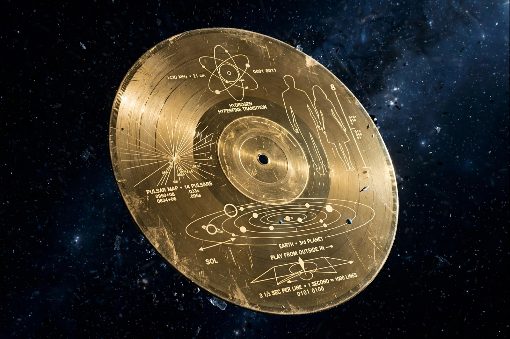

Voyager Golden Record
From Wikipedia, the free encyclopedia
| Voyager Golden Record | |
|---|---|
| Carried by | Voyager 1, Voyager 2 |
| Contents | 115 images, greetings in 55 languages, 90 minutes of music |
| Committee chair | Carl Sagan |
| Launched | 1977 |

The Golden Record's cover.The Voyager Golden Record is a 12-inch gold-plated copper phonograph record carried aboard both Voyager spacecraft, launched in 1977. Intended as a time capsule and message from humanity to any extraterrestrial finders, it contains sounds and images selected to portray the diversity of life and culture on Earth.
A committee chaired by Carl Sagan, with Ann Druyan as creative director, chose the contents in a matter of weeks: greetings in 55 languages, natural and human-made sounds (thunder, whales, a kiss, a rocket launch), 90 minutes of music from Bach and Mozart to Chuck Berry's "Johnny B. Goode" and gamelan and blues, and 115 encoded images — diagrams, landscapes, human anatomy, children, food, architecture.
Reception and legacy
The record includes instructions, in pictorial form, for playing it and locating Earth via pulsars. It has become a cultural icon — parodied, celebrated, and remixed; a vinyl edition for Earthlings won a Grammy in 2018. Critics at the time questioned omissions (no Beatles, at rights-holders' reluctance, is the famous one), and some scientists worried about advertising Earth's location — objections Sagan answered by noting any civilisation that finds it must already be far beyond us. The records will outlive Earth itself: in interstellar space they could remain playable for a billion years.